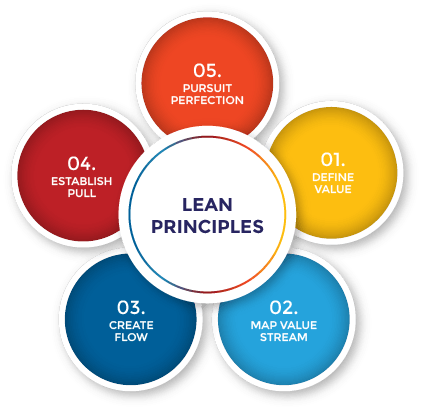

Lean methodology facilitates an ongoing process of incremental adjustment,
significantly accelerating product delivery by optimizing resources and effort
and allowing teams to work efficiently and effectively.
History of Lean methodology
Lean methodology aims to fully optimize your team’s process and output
through continuous improvements. When done well, Lean allows teams to
deliver customer value efficiently. Toyota Founder Kiichiro Toyoda
developed the Lean methodology after World War II to conserve
resources and eliminate waste. After observing the purchasing and
restocking of items at a supermarket, he conceived the just-in-time
concept, which focuses on making products exactly when customers need
them. Toyoda's concept morphed into the Toyota Production System,
which eventually became the Lean methodology. From these small
beginnings, Lean evolved into the foundation of Agile project
management-several industries, including software development,
construction, and healthcare, now use Lean methodology.
Overview of Lean methodology
Lean methodology rests on two pillars that provide a framework for all
Lean projects: Continuous improvement and respect for people.
- Continuous improvement: An ongoing feedback loop helps teams make
progressive changes to processes, products, and personnel to improve
systems continuously. By identifying, evaluating, and modifying
existing processes or systems – one cog at a time – teams can eliminate
waste and improve efficiency on the whole.
- Respect: Managers recognize
the value of team contributions and customer feedback, and take those
insights and ideas seriously. Lean managers distribute work throughout
the workflow in the most efficient manner to encourage close
collaboration and maximize value to customers. The core principles of
Lean methodology have been developed with both of these factors.
Principles of Lean methodology

It’s essential to consider the impact your work will have on the
customer experience. Lean’s five core principles help teams organize
tasks and provide project managers with oversight. These five core
principles include:
| Benefits | Challenges |
|---|---|
| Increased efficiency: By mapping the value stream, you can center work around customer needs, eliminating unnecessary work on products and services customers do not want. |
Lack of management support: Unsupportive management can destroy any Lean team and become a roadblock. Fix: Get the team’s buy-in as early as possible and show them how Lean can help. |
| Fewer issues: Lean mitigates issues, such as lack of communication and unrealistic deadlines, before they become larger problems. In the case of communication, Lean provides tracking and transparency so everyone is clear on tasks, responsibilities, and deadlines. Since the team participates more closely in the process, they can also push back on any unreasonable timelines. |
Insufficient training: An ill-trained team can negatively impact their output. If they don’t understand the Lean process, how can you expect them to easily plug into it? Fix: When onboarding the team, provide adequate training in Lean methodology. You can enroll your team in a Lean certification program that will provide hands-on training. With a certification, you’ll be confident that they have the proper knowledge of Lean methods. |
| Reduced costs: By creating a clear plan and eliminating roadblocks, you can save money by producing just enough to meet customer demand. That way, you’re not producing more stock than necessary, which is especially important for physical products. |
Focus on tools rather than culture: Putting tools before people decreases team engagement. An emphasis on tools in Lean may dehumanize and devalue your team and their work. When a team doesn’t feel valued, they’re less likely to give their best. Fix: Build a culture of trust using Lean's philosophy of continuous improvement. Providing continuous feedback and opportunities for growth shows that you, as a manager, are interested in your team’s career development. |
| Improved customer relationships: By focusing on customer value, you create stronger customer relationships, which is crucial to a business. |
Insufficient focus on metrics: Metrics are key to team improvement in Lean methodology. Fix: Pay attention to the metrics to measure project success and look for improvement areas to develop your team. |
| Continuous improvement: Lean’s ongoing feedback loop helps refine and continually improve processes to deliver value efficiently. |
|
| Team investment: Because Lean requires more involvement upfront from your team, they’ll be more engaged with the outcome. They’ll have a say on what they’re working on and when they expect to complete it. An empowered team is an engaged one. |